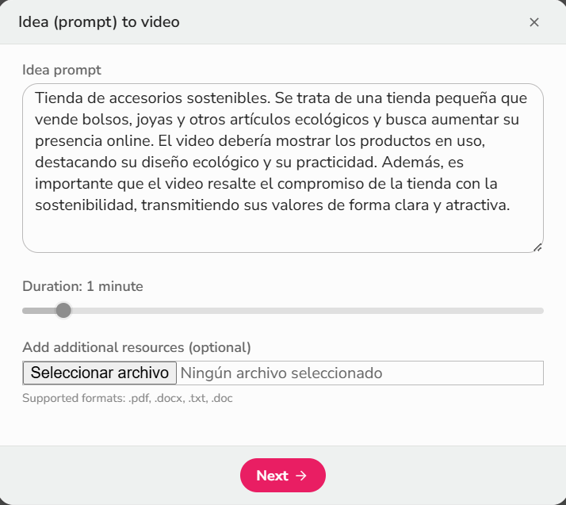
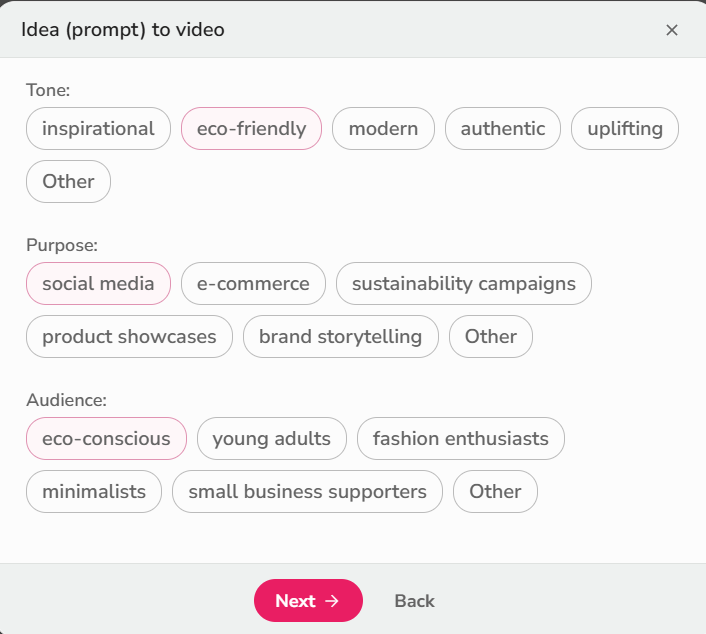
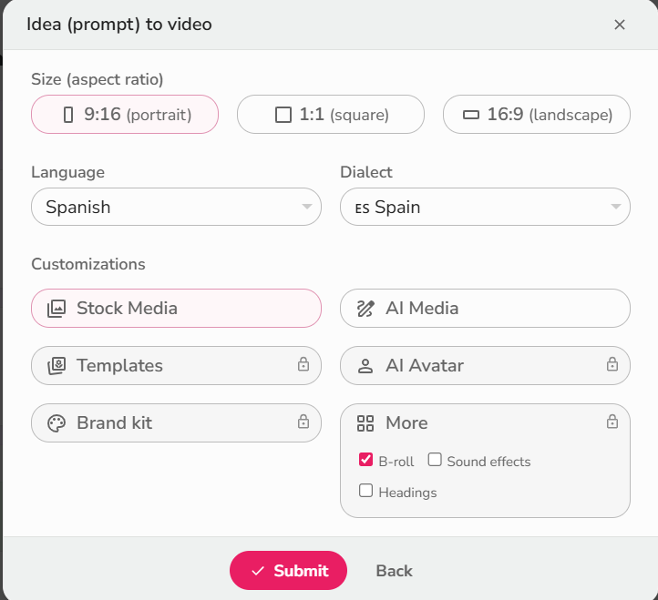
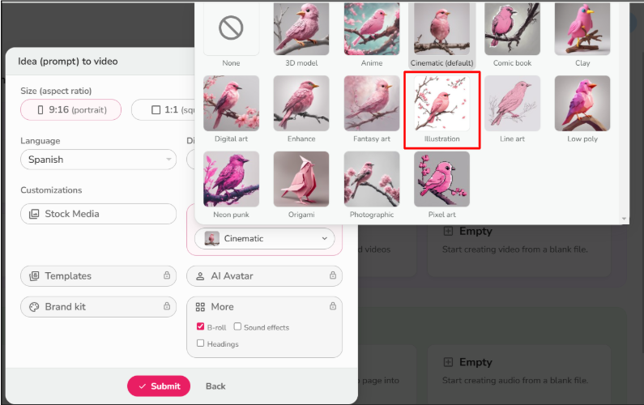

Video 1: Botiga accesoris
| Nombre del Video | Introducción a la IA |
|---|---|
| Duración | 2:30 minutos |
| Formato | MP4 |
| Resolución | 1920x1080 |
Video 2: Camping rural
| Nombre del Video | Aplicaciones de la IA |
|---|---|
| Duración | 3:45 minutos |
| Formato | MP4 |
| Resolución | 1920x1080 |
Cómo hemos creado: Botiga accesoris

Paso 1: Guion y planificación
Definimos el contenido del video, estructuramos el guion y decidimos qué partes íbamos a incluir para explicar los conceptos clave.

Paso 2: Grabación del video
Utilizamos herramientas de captura de pantalla y grabación para capturar las imágenes y el audio necesarios para los videos.

Paso 3: Edición y montaje
Editamos el material grabado con software de edición de video, ajustando el ritmo, añadiendo efectos y subtítulos para hacerlo más dinámico.

Paso 1: Guion y planificación
Definimos el contenido del video, estructuramos el guion y decidimos qué partes íbamos a incluir para explicar los conceptos clave.